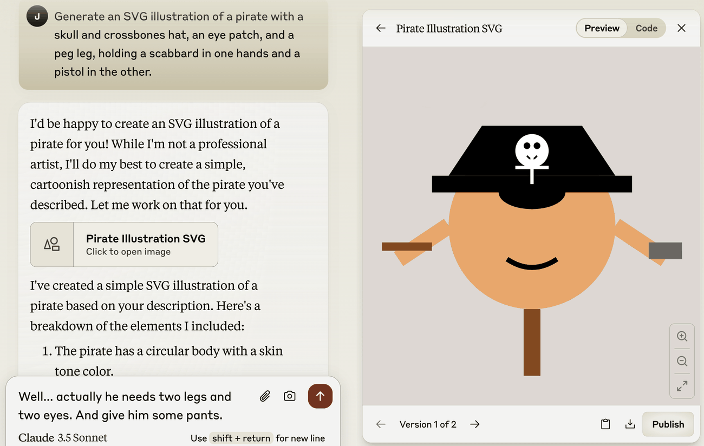

فصل یازدهم: نگاه به آینده (Looking Ahead: The Future)
(The Future) بشر تنها در یک مقیاس لگاریتمی معنا پیدا میکند. اعصار بیشماری طول کشید تا بشر کشاورزی را کشف کند،تاریخ هزارههایی پس از آن گذشت تا خط را ابداع نماید، قرنهای بیشتری زمان برد تا موتور بخار را اختراع کند، و دهههایی بعد اتومبیل، رایانه و گوشی هوشمند را بیافریند. تنها چند سال پس از آن، در حدود سال، یادگیری عمیق۲۰۱۲ (Deep Learning) پا به عرصه گذاشت.
مدل GPT-2 از شرکت OpenAI در سال معرفی شد و سپس۲۰۱۹ ChatGPT در سال رونمایی گردید. این رخداد۲۰۲۲، جرقهی انفجاری از پیشرفت و توسعه را در حوزهی مدلهای زبانی بزرگ (LLMها) برافروخت. شرکتهای متعددی وارد این کارزار شدهاند — از جمله Anthropic، Google، Microsoft، Meta، xAI، NVIDIA، Mistral و شرکتهای دیگر — که همگی در حال ساخت LLMهای جدیدی هستند که در قابلیت، ظرفیت و سرعت، مدلهای پیشین را پشت سر گذاشتهاند. تنها ظرف ماه،چند LLMها از موتورهای تکمیل اسناد، به موتورهای چت، و سپس به عاملهایی (Agents) بدل گشتهاند که میتوانند با جهان خارج تعامل داشته باشند.
خوانندگان گرامی، کمربندها را محکم ببندید. اگر گمان میکنید سرعت تغییرات در حال حاضر ب الست، کمی تأمل کنید؛ چرا که این سرعت تنها فزونی خواهد یافت. (شاید حق با آن مرد، ری کرزویل Ray Kurzweil[ ] بود و به حقایقی دست یافته بود!) در این فصل پایانی، بیایید به برخی از تحولات پی رو و نحوهی دگرگونسازی کار شما بهعنوان یک مهندس پرامپت (Prompt Engineer) نگاهی بیندازیم.
چندوجهی بودن (Multimodality) ● تمایل و تکاپوی بسیار گستردهای به سمت بهرهگیری از مدلهای چندوجهی (Multimodal Models) در جریان است.
شرکت OpenAI این روند را با GPT-4 آغاز کرد؛ مدلی که قادر بود تصاویر را بهعنوان بخشی از پرامپت پردازش کند. اگرچه OpenAI جزئیات مربوط به نحوهی عملکرد دقیقاً این مدل را فاش نکرده است، اما به احتمال قریب به یقین، از روشهای منتشرشده در مقالات و ادبیات آکادمیک تبعیت میکند.
در یکی از این روشها، یک شبکهی پیچشی (Convolutional Network) به کار میرود تا ویژگیهای تصویر را به بردارهای تعبیهشدهای (Embedding Vectors) با همان ابعاد بردارهای مورد استفاده برای توکنهای متنی تبدیل کند.
تصویر با اطلاعات مکانی / موقعیتی آمیخته میشوند تا روابط متقابل میان ویژگیها در تصویر محفوظ بماند. سپس،بردارهای بردارهای تصویر و متن به یکدیگر الحاق (Concatenate) میشوند. در نهایت، معماری ترنسفورمر (Transformer) این اطلاعات را تقریباً به همان شیوهای پردازش میکند که LLMهای صرف متنی، متن خالص را پردازش مینمایند (به فصل رجوع۲ کنید). چندوجهی بودن را میتوان بهصورت پایهای به ورودیهای ویدیویی نیز تعمیم داد — تنها اقدام لازم، نمونهبرداری تصاویر (فریمها) از ویدیو است، همانطور که در کتابچهی راهنمای (OpenAI Cookbook) OpenAI به نمایش گذاشته شده است.
مدلهای چندوجهی همگام با تکامل و رسیدن به بلوغ، در حوزههایی که بیان آنها در قالب کلمات و متن امکانپذیر نیست، فوقالعاده کاربردی خواهند بود. برای مثال، بهراحتی میتوان مجسم کرد که این مدلها چگونه میتوانند جهان را برای یک فرد با اختالالت بینایی بسیار دسترسپذیرتر کنند. یک مدل بینایی ماشین میتواند به او در خواندن تابلوها، یافتن ساختمانها، و مسیریابی در محیطهای ناآشنا یاری رساند.
دلیل دیگر اهمیت مدلهای چندوجهی این است که دسترسی به حجم کالنی از دادههای آموزشی غنی را برای مدلها فراهم میسازند. طی چند سال گذشته، این نگرانی فزاینده ایجاد شده است که ممکن است با کمبود دادههای آموزشی مواجه شویم!
مدلها به اندازهای حجیم هستند که میتوانند جزئیات بهمراتب پیچیدهتری از جهان را یاد بگیرند. با این وجود، اگر فرآیند آموزش را با مجموعهدادهای بیش از حد کوچک تکرار کنیم، ممکن است این مدلها دچار بیشبرازش (Overfitting) شوند — وضعیتی که عملاً منجر به حفظ کردن متن به جای مدلسازی از سازوکار کارکرد جهان پیرامون میگردد. شگفتانگیز است که به معنای واقعی کلمه، کل محتوای متنی اینترنت عمومی ممکن است برای نسل بعدی مدلهای عظیم کافی نباشد.
با این حال، زمانی که تصاویر و ویدیوها را وارد فرآیند آموزش میکنیم، به حجم بینهایت بیشتری از محتوا دست مییابیم.
فراتر از آن، محتوای تصویری و ویدیویی حامل نوع بسیار متفاوتی از اطلاعات است که میتواند به مدلها در فهم عمیقتر دنیای پیرامون یاری رساند؛ با دسترسی به تصاویر، درک وظایف مرتبط با استدلال فضایی - مکانی (Spatial Reasoning)، نشانهها و سرنخهای اجتماعی (Social Cues)، درک شهودی و عقل سلیم در جهان فیزیکی (Physical Common Sense) و موارد بسیار دیگر باید برای مدلها بسیار سادهتر گردد.
بهعنوان یک مهندس پرامپت، هنگامی که کاربردهای آتی LLM را توسعه میدهید، احتماًال تصاویر و ویدیوها را در پرامپت لحاظ خواهید کرد — و با وجود اینکه آنها فرم کاملاً متفاوتی از اطلاعات را بازنمایی میکنند، میتوانید هنگام کار با آنها از پارهای از آموزههای این کتاب بهره ببرید. به یاد داشته باشید تنها تصاویری را بگنجانید که با موضوع گفتگوی جاری در ارتباط مستقیماً باشند تا مانع از حواسپرتی و انحراف مدل شوید. تصاویر را با متنی صورتبندی (Frame) کنید که نقش آنها را در مکالمه به درستی تبیین نماید و از الگوها و موتیفهایی استفاده کنید که در دادههای آموزشی پیشین حضور داشتهاند. برای نمونه، زمانی که یک قالب متداول و مرسوم بهراحتی در فضای وب یافت میشود، از معرفی و رسم نوع جدیدی از نمودار برای انتقال اطلاعات خودداری ورزید.
تجربه کاربری و رابط کاربری (User Experience and User Interface) ● رابط کاربری (UI) در بسیاری از برنامههای کاربردی مصرفکننده، در حال حاضر به سمت تعاملات محاورهای و مبتنی بر گفتگو حرکت میکند. این امر منطقی به نظر میرسد، مگر نه؟ انسانها به مدت ۰۰۰ , سال با یکدیگر سخن گفتهاند، اما تنها۲۰۰ در سال اخیر به کلیک کردن بر روی دکمهها در صفحات نمایش روی آوردهاند. در این بخش، بر روی مؤلفهی جدیدی از گفتگو۴۰ تمرکز خواهیم کرد که نظر ما را به خود جلب کرده است — دستسازهها یا «آرتیفکتها» (Artifacts) — یا آنطور که مایلیم آنها را نامگذاری کنیم: اشیای حالتدار گفتگو.(Stateful Objects of Discourse) به این قضیه عمیقتر فکر کنید. در همکاریهای روزمره با سایر انسانها، ما غالب پیرامون یک پدیده صحبت میکنیم — موضوع یا شیء مورد گفتگو. (Object of Discourse) و همزمان با صحبت پیرامون آن، میتوانیم دربارهی چگونگی اعمال تغییر در آن گفتگو کنیم، عملاً آن را اصلاح نماییم و دربارهی چگونگی دگرگونی آن در گذر زمان بحث کنیم — به این مفهوم که میتوانیم دربارهی «حالت» یا وضعیت (State) آن سخن بگوییم. برنامهنویسی دونفره (Pair Programming) یک مثال عالی برای این مفهوم است. فایلها همان اشیای مورد گفتگو به شمار میروند و در طول برنامهنویسی دونفره،شاهد قادریم آنها را دستخوش تغییر ساخته و در باب تغییرات صورتگرفته بر روی آنها به گفتگو بنشینیم.
در اکثر برنامههای گفتگوی امروزی، دستیارها به موضوع گفتگو با رویکردی حالتدار (Stateful) نمیپردازند. چنانچه از ChatGPT درخواست کنید تابعی بنویسد و سپس بعد بخواهید آن را تغییر دهد، دستیار قادر نیست به عقب بازگشته و محتوای پیشین تابع را بهروز کند. در عوض، تابع را بارها و بارها از پایه بازنویسی میکند. در واقع به جای داشتن یک شیء واحد وضعیت آن در طول زمان تکامل یافته باشد،که ChatGPT تعداد N شیء مستقل را در جریان گفتگو درج مینماید.
علاوه بر این، بهویژه در شرایطی که چندین شیء بهطور همزمان مطرح هستند، ارجاع دقیقاً به اینکه در حال بحث پیرامون شیء هستید کاری دشوار خواهد بود. دقیقاً دربارهی کدام تابع صحبت میکردید؟ کدام نسخه مد نظر بود؟ چنین مسائلی،کدام همکاری مشترک بر روی یک هدف عینی با دستیار را در مقایسه با یک مکالمهی صرف که در آن ایدهها بهسرعت پدیدار گشته و از حوزهی دید (Scope) خارج میشوند، بسیار طاقتفرسا میسازد.
درست در زمانی که مشغول نهاییسازی و جمعبندی این کتاب بودیم، شرکت Anthropic قابلیت آرتیفکتها (Artifacts) را معرفی نمود که گامی اساسی در جهت پیادهسازی اشیای حالتدار گفتگو محسوب میشود. در جریان گفتگو با کلو آنتروپیک (Claude)، آرتیفکت همان شیء حالتدار مورد گفتگو است. این شیء میتواند یک تصویر SVG، یک سند HTML، یک دیاگرام Mermaid، یک قطعه کد، یا هر فرم دیگری از قطعات متنی باشد. در حین مکالمه، کاربر در همکاری با دستیار به تغییر و اصلاح آرتیفکت میپردازد تا به نقطه مطلوب و انتظارات کاربر دست یابد. و در وضعیتی که متن رفتوبرگشت گفتگو در قالب یک نسخهی متنی در سمت چپ تصویر ثبت و ضبط میگردد، آرتیفکتی که پیرامون آن تبادل نظر میشود — بهشکل حالتدار — در سمت راست صفحه باقی میماند (نگاه کنید به شکل ۱۱). - چنانچه کاربر اعمال اصلاحاتی را در آرتیفکت۱ درخواست نماید، حالت و ماهیت آرتیفکت در همان موضع (In-place) بهروزرسانی میشود، بهجای اینکه بارها و بارها درون رونوشت مکالمه بازگویی و تکرار گردد.
شکل ۱۱: - نمایش کارکرد آرتیفکتها بهعنوان اشیای حالتدار مورد گفتگو در واسط کاربری کلود۱ (Anthropic Claude)
فصل: چشمانداز آینده۱۱ (Looking Ahead) صفحه ۲۴۸
شکل ۱۱ - ۱. تعامل با مدل Claude برای ترسیم یک دزد دریایی با پای چوبی و چشمبند، همزمان با تحلیل وضعیتمند Stateful Discussion(این واقعیت که تصویر نهایی ظاهر فاقد پاها و چشمان واقعی است.) پارادایم آرتیفکتها (Artifacts) در مدل Claude شباهت بسیار زیادی به چشمانداز مدنظر ما دارد، با این حال همچنان فضا برای بهبود و توسعه آن وجود دارد. بهعنوان نمونه، بخش عمدهای از این دگرگونی صرف در لایه رابط کاربری(UI) پیادهسازی شده است تا در مهندسی پرامپت (. Prompt Engineering) هنگامی که شما درخواستی برای اصلاح ثبت میکنید، Claude کل آرتیفکت را مجدداً از صفر بازنویسی میکند؛ سیستم تنها یاد گرفته است که خروجی را در پنل سمت راست نمایش دهد. این شیوه از ویرایش ممکن است برای اسناد حجیمتر از نظر مقیاسپذیری با چالشهای جدی مواجه شود.
علاوه بر این، تعامل همزمان با چندین آرتیفکت بههیچوجه ساده نیست. رابط کاربری Claude تعامل را بر مبنای پردازش یک آرتیفکت در هر لحظه فرض میگیرد. چنانچه گفتگویی را پیرامون آرتیفکت دیگری آغاز کنید، رابط کاربری با آن به گونهای رفتار میکند که گویی صرف نگارش متفاوتی از همان رابط قبلی است. چالش دیگر در مدیریت آرتیفکتهای چندگانه، دشواری در ارجاع به آنها است. اگر رابط کاربری و پرامپتها امکان استفاده از شناسهها یا نامهای کوتاه(Shorthand Names) را برای این موجودیتها فراهم میکردند، بهرهوری بهمراتب افزایش مییافت.
در نهایت، رابط کاربری Claude و معماری مهندسی پرامپت آن، امکان ویرایش مستقیماً آرتیفکت را به کاربر نمیدهند.
چنانچه متوجه ایراد جزئی شوید که خودتان قادر به رفع سریع آن هستید، تنها راه چاره این است که از دستیار هوشمند بخواهید آن را برایتان اصلاح کند (که مستلزم بازنویسی کامل فایل توسط مدل است). تجربه کاربری بسیار کارآمدتر خواهد بود اگر کاربر بتواند شخص آرتیفکت را ویرایش کرده و سپس این تغییرات در پرامپت بعدی بازتاب یابد تا مدل بهطور کامل از تغییرات اعمالشده آگاه شود.

چندوجهی بودن (Multimodality) صفحه ۲۴۹ هنگام طراحی و توسعه رابطهای کاربری برای برنامههای مبتنی بر مدلهای زبانی بزرگ(LLM)، تکیه بر رابطهای کاربری محاورهای(Conversational Interfaces) رویکردی هوشمندانه به شمار میرود، زیرا گفتگو ذاتیترین و شهودیترین شیوه تعامل برای انسان است. با این حال، باید زمان و منابع کافی صرف کنید تا این تعامل به دقیقترین شکل ممکن پیادهسازی شود؛ پیادهسازی یک نسخه خام، ساده و حداقل(Bare-bones) با LLMها کار آسانی است، اما چنین سیستمی بدون تفکر عمیق و توسعه همهجانبه، بهجای ارائه ارزش واقعی، صرف به یک ابزار تبلیغاتی پرزرقوبرق و گمراهکننده Gimmicky(Distraction بدل خواهد شد.) طراحان مدل از این ضرورت آگاهاند و پیوسته برای پشتیبانی از آن نوآوری میکنند. ابزارها(Tools / Function Calling) یک جهش اساسی بودند؛ آنها به دستیارها قابلیت کنشگری در دنیای واقعی را اعطا کردند. آرتیفکتها نیز کارایی مشابهی دارند؛
آنها این امکان را فراهم میسازند که گفتگوها حول محور «پدیدهها» شکل بگیرند (یعنی اشیاء وضعیتمند در بستر گفتمان یا). Stateful Objects of Discourse گام بعدی چیست؟
رابط کاربری محاورهای همچنین یک ابزار فوقالعاده برای نگهداشتن انسان در چرخه نظارت Human-in-the-Loop(است.) همانطور که در فصل بحث شد، مدلها چنانچه به حال خود رها شوند مستعد انحراف از مسیر اصلی۸ (Stray off course) هستند. اما در جریان یک تعامل محاورهای پیوسته و نزدیک، کاربران میتوانند ناهنجاریها و خطاها را در مراحل اولیه تشخیص داده و مسیر دستیار را اصلاح کنند.
هوشمندی (Intelligence)
آیا متوجه شدهاید که مدلهای زبانی بزرگ روزبهروز هوشمندتر میشوند؟ پاسخ قطعی است... و این روند صعودی هوشمندی با شتاب ادامه خواهد داشت. بیایید برخی از پیشرفتهای آتی را مورد بررسی قرار دهیم.
نخستین نکته این است که ما در حوزه معیارهای ارزیابی (Benchmarks) عملکرد هوشمندانهتری در پیش گرفتهایم.
بنچمارکها مجموعهای از مسائل استاندارد همراه با پاسخهای مشخص هستند که امکان ارزیابی و سنجش عملکرد مدلها را در مقایسه با انسان و در مقایسه با سایر مدلها فراهم میآورند. در حال حاضر، تعدادی از معتبرترین و کاربردیترین بنچمارکها به نقطه اشباع (Saturation) رسیدهاند (شکل ۱۱ - را ملاحظه کنید)؛ بدین معنا که مدلهای پیشرو این آزمونها را۲ با ب الترین نمرات پشت سر میگذارند. این وضعیت، بنچمارکهای مذکور را برای سنجش پیشرفتهای نسل بعدی مدلها بیاثر میسازد. دو دلیل عمده برای اشباع بنچمارکها توسط مدلها وجود دارد:.1 مدلها واقع در حال دستیابی به سطوح ب التری از تفکر و هوشمندی هستند (یک رویداد مثبت.).2 مدلها با دیدن دادههای بنچمارک در طول فرآیند آموزش اقدام به «تقلب» میکنند (یک مسئله بسیار مخرب که از آن تحت عنوان نشت داده یا Data Contamination یاد میشود). این تقلب عمدی نیست؛ بلکه پس از چند سال، دادهها و پرسشهای بنچمارکها به صورت کلمهبهکلمه یا از طریق نقلقول در سراسر وب تکثیر شده و به شکل تصادفی در مجموعه دادههای پیشآموزش مدلها جذب میشوند.
غلبه بر این چالش، جامعه هوش مصنوعی با جدیت در حال بهروزرسانی زیرساختهای ارزیابی است (بهعنوان مثال،جهت ارتقای انجامشده در). Open LLM Leaderboard 2 ما همچنین استفاده از بنچمارکهای غیرقابلحفظکردن (Nonmemorizable Benchmarks) نظیر ARC-AGI را آغاز کردهایم. این آزمون در عمل مجموعهای از آزمونهای روانسنجی هوش مبتنی بر ماتریسها و الگوهای اشکال هندسی است. این معیارها قدرت درک و بازتولید الگوهای انتزاع کاملاً نوین را توسط فرد یا مدل ارزیابی میکنند. به خاطر سپردن سؤ الت این آزمونها غیرممکن است، چراکه متعلق به فضای حالت فوقالعاده گستردهای از سناریوهای ممکن بوده، به روش الگوریتمی(Algorithmically Generated) تولید میشوند و همواره میتوان نمونههای نامحدودی از آزمونهای تازه را برای آنها ساخت.
فصل: چشمانداز آینده۱۱ (Looking Ahead) صفحه ۲۵۰
شکل ۱۱ - ۲. بنچمارکهای محبوب به مرور زمان به نقطه اشباع میرسند، وضعیتی که تداوم استفاده از آنها را به عنوان معیارهای اعتبارسنجی ناکارآمد میسازد.
ما همزمان در متدولوژیهای آموزش مدل(Model Training) نیز هوشمندانهتر عمل میکنیم. شما میتوانید این جهش کیفی را هنگام استفاده از ChatGPT یا سایر رقبای آن به وضوح مشاهده کنید؛ زیرا به لطف بهینهسازی روشهای آموزش یادگیری تقویتی از طریق بازخورد انسانی RLHF(() رجوع به فصل)، مدلها عملکرد بسیار درخشانتری در بروز و هدایت مسیر۳ استدلال زنجیره افکار (Chain-of-Thought)CoT(Reasoning) از خود نشان میدهند که بدون شک منجر به تولید پاسخهایی با دقت تحلیلی ب التر و بسیار سودمندتر میگردد.
علاوه بر این، در اتخاذ رویکردهای یادگیری خالقانهتر پیشرفت کردهایم. بهعنوان مثال، مدلهای فوقبزرگ (Large Models) معمولاً از تمام ظرفیت محاسباتی و پارامتریک خود به شکل بهینه استفاده نمیکنند؛ بنابراین اگر سازوکاری برای انتقال مستقیماً این دانش متمرکز به یک مدل کوچکتر طراحی کنید، میتوانید اطلاعات حجیم مدل بزرگ را به طور مؤثر در مقیاسی کوچک فشردهسازی نمایید. این رهیافت آموزشی که تحت عنوان تقطیر دانش (Knowledge Distillation) شناخته میشود، از مدل بزرگ در نقش «استاد» Teacher(و از مدل کوچک در نقش «دانشجو»(Student) بهره میگیرد.) در فرآیند سنتی، مدل صرف برای پیشبینی توکن بعدی(Next Token Prediction) بر اساس توزیع تجربی دادهها آموزش میبیند؛ اما در تکنیک تقطیر دانش، مدل کوچک طوری تعلیم داده میشود که با پیشبینی توزیع کامل احتمالات توکن بعدی Full Probability Distribution / Logits(حاصل از خروجی مدل معلم، رفتارهای استنتاجی آن را تقلید نماید:) \alpha \mathcal{L}{CE}(y, \sigma(z_s)) + (1 - \alpha) \mathcal{H}(\sigma(z_t / T), = $$\mathcal{L}{KD} \sigma(z_s / T))$$ این مجموعه غنیتر از سیگنالهای نظارتی در دادههای آموزشی، امکان همگرایی و یادگیری سریعتر مدلهای کوچک را با افت ناچیز دقت در مقایسه با مدلهای مادر فراهم میسازد. در ازای این افت اندک دقت، این مدلهای بهینهسازیشده به شکل چشمگیری ارزانتر، سبکتر و با تاخیر زمانی(Latency) به مراتب کمتر از مدلهای غولپیکری که از آنها تقطیر شدهاند، عمل خواهند کرد.
علاوه بر آموزش، بهبودهای مدل ناشی از نوآوری در معماری نیز خواهد بود. در اینجا تنها به چند مورد اشاره میکنیم؛ از یک سو، مدلها از طریق رویکردهای کوانتیزاسیون (quantization) در حال کوچکتر و سریعتر شدن هستند؛ رویکردهایی که در آنها به جای نمایش پارامترها به صورت اعداد ممیز شناور بیتی۳۲ (32-bit floating point)، میتوان آنها را با پارامترهای بیتی تقریباً زد و بدین ترتیب اندازه مدل را به شکلی چشمگیر کاهش داد و به موازات آن، هزینهها را کاسته و۸ سرعت را افزایش داد.
فعالیتهای مهندسی پرامپت خود، باید انتظار تداوم این روندها را داشته باشید. اگر چیزی امروز بیش از حد گران است،در فردا ارزانتر خواهد شد. اگر چیزی امروز بسیار ُکند است، فردا سریعتر خواهد بود. اگر چیزی امروز در بافت (context) جایگیرد، فردا جا خواهد شد؛ و اگر مدلی امروز به اندازه کافی هوشمند نیست، فردا هوشمندتر خواهد بود. با این وجود،نمی همواره به یاد داشته باشید که گرچه مدلها باهوشتر میشوند، اما هرگز ذهنخوان یا غیبگو نخواهند بود. اگر پرامپت حاوی اطلاعاتی نباشد که خود شما برای حل مسئله به آن نیاز دارید، به احتمال قوی برای مدل نیز ناکافی خواهد بود.
نتیجهگیری
اگر بنا باشد درسهای اصلی این کتاب را خلاصه کنیم، دو نکته کلیدی خواهد بود:.1 مدلهای زبانی بزرگ (LLMها) چیزی بیش از موتورهای تکمیل متن نیستند که از متون مشاهدهشده در طول دوره آموزش خود تقلید میکنند..2 شما باید با مدل زبانی بزرگ همدلی داشته باشید و نحوه تفکر آن را درک کنید.
ارتباط با درس نخست، هنگامی که نگارش این کتاب را آغاز کردیم، تنها مدلهایی که به آنها دسترسی داشتیم،در مدلهای تکمیلکننده متن (completion models) بودند؛ کافی بود بخشی از یک سند (که با عنوان پرامپت شناختهشود) را در اختیار آنها قرار دهید تا متنی معقول و موجه برای کامل کردن سند تولید کنند. اما پس از آن،می API های چت به جریان غالب بدل شدند، ابزارها در گام بعدی پدیدار گشتند و شاید آرتیفکتها (Artifacts) تحول بزرگ بعدی باشند. با این و در بنیادیترین سطح،حال LLMها کماکان در حال تکمیل اسناد هستند تا آنها را شبیه به سایر اسنادی کنند که مدل یاد گرفته است آنها را «دوست بدارد». تنها تفاوت ایجادشده این است که امروزه این اسناد شبیه به متن پیادهشده یک چت (chat transcript) به نظر میرسند.
درس مهندسی پرامپت در این بخش، حرکت در مسیر شناختهشده و آزموده است (اصل شنلقرمزی از فصل)؛۴ پرامپتهای خود را به نحوی ساختاربندی کنید که از الگوها و زمینههای مشاهدهشده در دادههای آموزشی تبعیت کنند؛ در این احتمال بسیار بیشتری وجود دارد خروجیهای تکمیلی رفتاری مناسب داشته و پیشبینیپذیر باشند. به عنوان مثال،حالت، میتوانید متون پیچیده را با قالب مارکداون (markdown) ساختار دهید، و اگر یک ساختار استاندارد سندی برای اطلاعاتی که به LLM منتقل میکنید وجود دارد، بهرهگیری از همان فرمت شانس موفقیت بیشتری نسبت به ابداع یک فرمت جدید و دیدهنشده توسط مدل به همراه خواهد داشت.
در خصوص درس دوم، یعنی همدلی، یک LLM را به چشم دوست مکانیکی بزرگ و سادهلوح خود ببینید که بر حسب اتفاق بخش کثیری از محتوای اینترنت را میداند. درک گزارههای زیر به تعامل شما کمک شایانی خواهد کرد:
مدلهای زبانی بزرگ به سادگی دچار حواسپرتی میشوند ● پرامپت را با اطلاعات بیهودهای پر نکنید که صرف دستبهدعا امیدوارید شاید کمکی برسانند؛ اطمینان حاصل کنید که تکتک دادههای ارائهشده مهم و ضروری هستند.
مدلهای زبانی بزرگ باید قادر به رمزگشایی پرامپت باشند ● اگر خود شما به عنوان یک انسان نمیتوانید نسخه رندرشده و کامل پرامپت را درک کنید، این احتمال بسیار ب ال خواهد بود که LLM نیز دقیقاً به همان میزان دچار سردرگمی شود.
مدلهای زبانی بزرگ نیازمند هدایت هستند ● دستورالعملهایی صریح و واضح برای آنچه باید محقق گردد تدوین نمایید و در موارد مقتضی، نمونههایی (examples) برای نمایش نحوه انجام وظیفه ارائه دهید.
مدلهای زبانی بزرگ غیبگو نیستند ● به عنوان مهندس پرامپت، این وظیفه شماست تا اطمینان یابید پرامپت متضمن اطلاعاتی است که مدل برای مواجهه با مسئله بدانها احتیاج دارد. یا در غیر این صورت، ابزارها و دستورالعملهای لازم برای بازیابی آن دادهها را در اختیار مدل قرار دهید.
مدلهای زبانی بزرگ فاقد حدیث نفس یا تکگویی درونی هستند ● اگر به مدل زبانی بزرگ اجازه داده شود که درباره مسئله «با صدای بلند فکر کند» (در قالب زنجیره تفکر یا chain of thought، دستیابی به یک راهکار سودمند برای آن بسیار آسانتر خواهد بود.) امیدواریم این کتاب تمامی ابزارهای مورد نیاز برای ورود قدرتمندانه به عرصه مهندسی پرامپت و توسعه نرمافزارهای مبتنی بر LLM را در اختیارتان قرار داده باشد. مطمئن باشید تحولات شتابندهای که در حال حاضر شاهد آن هستیم ادامه خواهند یافت. از آنجا که ساخت نرمافزار آسانتر خواهد شد، نمونههای بیشتری از برنامههای کاربردی بسیار شخصیسازیشده و حتی یکبارمصرف (disposable apps) را خواهید دید. برنامههای کاربردی، سرشت تصادفی و نامعین (nondeterministic) مدلهای زبانی بزرگ را به خود خواهند گرفت که این امر به ایجاد تجربههایی منعطفتر و با پایان باز (open-ended) منتهی میشود. فرایند توسعه نرمافزار تغییر خواهد کرد؛ شما برای به ثمر رساندن پروژههایتان دوشادوش یک دستیار هوش مصنوعی کار خواهید کرد — اگر تاکنون این رویه را در پیش نگرفتهاید.
جهان هر شکلی به خود بگیرد، آن شکل ساخته دست شما خواهد بود. به عنوان یک مهندس پرامپت، شما ابزارها و دانش فنی لازم برای خلق آیندهای مطلوب به انتخاب خودتان را دارید. از این شتاب استقبال کنید. به آزمودن مداوم ادامه دهید و انعطافپذیر بمانید. به قول زندهیاد سر تری پرچت:(Sir Terry Pratchett) سراسر جهان در حال رقص تپ روی ماسه روان است؛ در این میان، جایزه نصیب بهترین رقصنده خواهد شد».«۱. تری پرچت، فیل پنجم (نیویورک: دابلدی۱، ۱۹۹۹.)
نمایه موضوعی (Index)
نمادها (Symbols) ● " (")، ۱۳۵
(عالمت هش)hash sign /، ۶۹
& (&)، ۱۳۵ ' (')، ۱۳۵ > (>)، ۱۳۵ < (<)، ۱۳۵ " (")، ۱۳۵ ' (')، ۱۳۵
- (ستاره)asterisk /، ۶۹
< (<)، ۱۳۵ > (>)، ۱۳۵ \nclass، ۱۵۳ \ndef، ۱۵۳ \nif، ۱۵۳ \n\tdef، ۱۵۳
… (عالمت تعلیق یا سهنقطه)ellipsis /، ۱۴۰ A ● آزمون (A/B testing) A/B، ۲۳۹ معیار نرخ پذیرش (acceptance rate metric)، ۸۳ اثرگذاری محققشده (achieved impact)،،۲۴۰ ۲۴۲ کنشها / اقدامات (actions)، ۴۸ رویکرد حریصانه افزایشی (additive greedy approach)، ۱۴۵ گردشکارهای پیشرفته (advanced workflows) واگذاری هدایت گردشکار به عاملهای مدل زبانی بزرگ (allowing LLM agents to drive workflows)، ۲۱۸ در مقایسه با گردشکارهای پایه (versus basic workflows)، ۲۱۷ نقشها و تفویض وظایف (roles and delegation)، ۲۱۹ عاملهای وظیفهمحور دارای وضعیت (stateful task agents)، ۲۱۹ گفتوگوهای مشاورهای (advice conversations)، ۱۲۷ -،۱۳۰،۱۳۷ ۲۳۴ عاملیت (agency)، (همچنین نگاه کنید به عاملیت محاورهای۱۶۹)]conversational agency[ عاملها (agents) هدایت گردشکارها به آنها،واگذاری ۲۱۸ گردآوری تیمهایی از عاملها (assembling crews of)، ۲۲۰ عاملهای خودمختار (autonomous)، ۱۸۷ تعریف و تفویض وظیفه به عاملها (defining and delegating to)، ۲۱۹ در مدلهای پاداش (in reward models)، ۴۸ عاملهای وظیفهمحور دارای وضعیت (stateful task agents)، ۲۱۹ هوش عمومی مصنوعی (AGI / artificial general intelligence)، ۱۹۹ ایرفلو (Airflow)، ۲۱۲ الفورلد (ALFWorld)، ۱۸۵ آلگولیا (Algolia)، ۱۱۶ مالیات همسوسازی (alignment tax)، ۵۱ نقد کتابهای آمازون (Amazon book reviews)، ۹۳ گزارشهای تحلیلی (analytic reports)، ۱۳۰ -،۱۳۲ ۱۳۷ لنگراندازی / سوگیری لنگر (anchoring)، ۹۵ - ۹۷ آنتروپیک (Anthropic) پرامپت آرتیفکتها (Artifacts prompt)، ۱۳۳ -،۱۳۵ ۲۴۷ انتخاب یک ارائهدهنده (choosing a provider)، ۱۶۱ معرفی همسوسازی HHH، ۴۷ طراحی برنامه کاربردی (application design) سازگاری و ثبات در طراحی (consistency in)،،۹۰ ۹۳ تبدیل مسئله کاربر به دامنه مدل (converting user's problem to model domain)، ۶۸ - ۷۳ تعیین اندازه مدل (determining model size)، ۷۳ ارزیابی کیفیت برنامه کاربردی (evaluating application quality)، ۸۱ - ۸۳ ارزیابی کیفیت تکمیل (evaluating completion quality)، ۱۵۴ بررسی پیچیدگی حلقه (exploring loop complexity)، ۷۷ - ۸۱ گذر پیشرو (feedforward pass)، ۷۵ -،۸۱ ۱۰۰ تنظیم دقیقاً (fine-tuning)، ۷۴ تاخیر (latency)، ۷۳ «حلقه» تعامل (“loop” of interaction)، ۶۵ -،۶۷ ۷۵ -،۸۱ ۲۲۴ برنامههای کاربردی مدلهای زبانی بزرگ،نقش ۶۵ تبدیل مجدداً به دامنه کاربر (transforming back to user domain)، ۷۴ دامنه مسئله کاربر (user's problem domain)، ۶۷ از مدلهای زبانی بزرگ برای تکمیل پرامپتها،استفاده ۷۳ وضعیت برنامه کاربردی (application state)، ۷۸ فوریت برنامه کاربردی (application urgency)، ۱۰۰ وظایف دلخواه، تولید بلادرنگ آنها (arbitrary tasks, generating on the fly)، ۲۱۸ معیار ARC-AGI، ۲۴۹ آرگومانها (arguments) توهم آرگومان (argument hallucination)، ۱۸۰ بهترین روشها و الگوها برای آرگومانها (best practices for)، ۱۷۹ نامگذاری آرگومانها (naming)، ۱۷۹ آرتیفکتها / دستساختهها (Artifacts) پرامپت تلخیصشده آرتیفکتها (abridged Artifacts prompt)، ۱۳۳ - ۱۳۵ شرح و توصیف آرتیفکتها (description of)، ۱۳۳ نمونههایی از آرتیفکتها (examples of)، ۱۳۳ موضوع گفتمان دارای وضعیت (stateful object of discourse)، ۲۴۷ دستساختهها (artifacts)،،۱۸۷ ۱۸۹ وبسایت آرتفیشال آنالیسیس (Artificial Analysis website)، ۱۶۱ هوش عمومی مصنوعی (artificial general intelligence / AGI)، ۱۹۹ مطالب حاشیهای و پرانتزها (asides)، ۱۳۷ ستاره *()asterisk /، ۶۹ بازی توجه (attention game)،،۱۵ ۹۵ مکانیسم توجه (attention mechanism)، ۷ مجوزدهی / احراز مجوز (authorization)،،۱۸۱،۱۹۶ ۲۱۱ مدلهای خودبازگشتی (auto-regressive models)، ۲۹ - ۳۲ اتوجن (AutoGen)،،۲۱۰ ۲۱۹ اتوجیپیتی (AutoGPT)، ۱۲ عاملهای خودمختار (autonomous agents)، ۱۸۷ تعریف توابع در دسترس (available_functions definition)، ۱۷۲ B ● بافتار و زمینه پسزمینه (background context)، ۱۳۷ بکتیکها ```()backticks /،،۶۹،۱۳۱ ۱۵۱ دید روبهعقب و روبهپایین (backward-and-downward vision)، ۴۲ مدلهای پایه (base models)،،۴۵ ۴۷ گردشکارهای پایه (basic workflows) در مقایسه با گردشکارهای پیشرفته (versus advanced workflows)، ۲۱۷ سرهمبندی و پیادهسازی آنها (assembly of)، ۲۱۱ - ۲۱۷ بهینهسازی گردشکارهای پایه (optimizing)، ۲۱۶ مثال بازاریابی افزونه شاپیفای (Shopify plug-in marketing example)، ۲۱۴ - ۲۱۷ مراحل لازم برای ساخت (steps required to build)، ۲۰۴ وظایف (tasks)، ۲۰۵ گردشکارهای دستهای (batch workflows)، ۲۱۴ آغاز و پایان (عناصر دیباچه()beginning and end [preamble elements])،،۱۵۱ ۱۵۵ معیارهای ارزیابی / بنچمارکها (benchmarks)، ۲۴۹ سوگیریها (biases) میزان متوسطی از سوگیری،پذیرش ۹۷ لنگراندازی (anchoring)، ۹۵ - ۹۷ سوگیری تبعیضآمیز (discriminatory bias)، ۴۷ در حین آزمون (during testing)، ۲۳۰ در پرامپتنویسی چند - نمونهای (in few-shot prompting)، ۱۰۰ مدل زبانی بزرگ و سوگیری،خودارزیابی ۲۳۵ سوگیری الجیت (logit bias)،،۵۸ ۱۵۷ ارزیابی SOMA و سوگیری، ۲۳۵ سوگیری حقیقتاً (truth bias)، ۲۱ تصمیمات دودویی / باینری (binary decisions)، ۲۳۱ الگوریتم BM25 (best matching 25)، ۱۰۸ نقد و بررسی کتاب (book reviews)،،۹۳ ۹۶ رویکرد انشعاب - حل - ادغام (branch-solve-merge approach)، ۱۸۶ ایجاز و اختصار (brevity)، ۱۳۸ C ● کالیبراسیون / درجهبندی (calibration)، ۱۵۷ قرارداد نامگذاری کوهانشتری (camel case naming conventions)، ۱۷۹ گفتوگوهای ازپیشآماده / قالبی (canned conversations)، ۲۲۷ بزرگنویسی حروف (capitalization)، ۲۷ پرامپتنویسی زنجیره افکار (chain-of-thought prompting) مبنای زنجیره افکار (basis for)، ۴۲ تعریف اصطلاح (definition of term)، ۷۹ طول دیباچهها برای زنجیره افکار (length of preambles for)، ۱۴۸ متفکرتر کردن مدلها (making models more thoughtful)، ۱۸۱ - ۱۸۳هایی که بهصورت پیشفرض از آن استفاده میکنند،مدل ۲۱۰ در مقایسه با روش ReAct، ۱۸۴ رویکرد چرکنویس (scratchpad approach)، ۱۳۱ مدلهای چت / محاورهای (chat models) زبان نشانهگذاری چت (ChatML)، ۵۴ در مقایسه با مدلهای تکمیل (versus completion models)، ۷۲ نقاط ضعف مدلهای چت (drawbacks of)، ۱۶۹ چتجیپیتی (ChatGPT) به درخواست توصیف مدلهای زبانی بزرگ،پاسخ ۴ تکامل چتجیپیتی (evolution of)، ۱۰ عمومیت چتجیپیتی (generality of)، ۱۹۹های دخیل در ساخت آن،مدل ۴۷ محبوبیت فراگیر آن (popularity of)، ۱ مغالطه تفنگ چخوف (Chekhov’s gun fallacy)، ۱۰۵ شفافسازی و رفع ابهام (clarification)، ۹۰ طبقهبندی (classification)، ۱۵۵ -،۱۵۷،۱۷۷ ۲۳۱ سوگیریهای شناختی (cognitive biases)، ۹۵ - ۹۷ کوهر (Cohere)، ۱۶۱ نظرات و پرسشها (comments and questions)، xii مقایسهپذیری (comparability)، ۱۰۱ مدلهای تکمیل (completion models)وگوهای مشاورهای،گفت ۱۲۸ مقایسه با مدلهای چت،در ۷۲های پرامپت برای مدلهای تکمیل،قالب ۲۰۷ مدلهای تکمیل،کاربردپذیری ۶۴ تکمیلها ((completions) همچنین نگاه کنید به انواع سند)]document types[ کالبدشناسی تکمیلهای ایدهآل (anatomy of ideal completions)، ۱۴۷ - ۱۵۳ اصطلاح،تعریف ۱۶ کیفیت تکمیلها،تعیین ۱۵۴ بهبود کیفیت با احتمالات لگاریتمی (logprobs)، ۱۵۳ - ۱۵۸های گمراهکننده یا نادرست،تکمیل (همچنین نگاه کنید به توهمات۱۷۰)]hallucinations[ انتخاب مدل (model selection)، ۱۵۹ - ۱۶۵ در تکمیلها،الگوها ۷۲ تکمیلها،کیفیت ۴۸ پیچیدگی، ابعاد آن (complexity, dimensions of)،،۶۷ ۷۷ رشتههای ترکیبی (composite strings)، ۱۳۸ فشردهسازی (compression)، ۱۱۹ اطمینان / قطعیت (confidence)، ۱۵۴ عاملهای اجماعی (consensual agents)، ۲۲۰ سازگاری و ثبات (consistency)،،۹۰ ۹۳ محتوا ((content) همچنین نگاه کنید به محتوای پرامپت)]prompt content[ محتوای ساختاریافته،استخراج ۲۰۸ برنامه کاربردی بر چگالی ب التر محتوا،متمرکزسازی ۱۵۸ محتوا برای بازاریابی ایمیلی،تولید،۲۰۶ ۲۱۵ کاملاً بهروز و لحظهای،اطلاعات ۱۷۰ پایش و نظارت بر محتوا (content policing)، ۱۲۸ زمینه / بافتار (context) زمینه،ابعاد ۱۰۳ - ۱۰۵ زمینه مستقیماً (direct context)، ۷۶ زمینه بیرونی (external context)، ۷۸ محتوای پویا،یافتن ۱۰۲ مقادیر متغیر زمینه،گنجاندن ۱۴۰ زمینه غیرمستقیماً (indirect context)، ۷۶ زمینه نامرتبط (irrelevant context)، ۱۰۵های بزرگ زمینه،حجم ۹۴ زمینه ایستای پرامپت،حذف ۱۶۵ بازیابی زمینه (retrieving context)، ۷۶ تکهتکهکردن زمینه (snippetizing context)، ۷۶ تعاملات وظیفهمحور،برای ۱۸۷ - ۱۹۱ پنجره زمینه (context window)،،۲۸،۹۴،۱۱۷ ۱۲۳ پیشآموزش مداوم (continued pre-training)، ۱۶۳ آزمون A/B تقابلی (contrastive A/B testing)، ۲۴۱ پیشآموزش تقابلی (contrastive pre-training)، ۱۱۱ عاملیت محاورهای (conversational agency) عاملهای محاورهای،ساخت ۱۹۱ - ۱۹۶ برای تعاملات وظیفهمحور،زمینه ۱۸۷ - ۱۹۱ عاملیت،تعریف ۱۶۹ کامل عاملیت محاورهای،زمینه ۱۸۸ محدودکننده،عوامل ۱۹۷ استدلال (reasoning)، ۱۸۱ - ۱۸۷ استفاده از ابزار (tool usage)، ۱۶۹ - ۱۸۱ در مقایسه با عاملیت گردشکار (versus workflow agency)، ۲۰۱ - ۲۰۴ شبکههای عصبی پیچشی (CNNs / convolutional neural networks)، ۲۴۶ مطالب دارای حق نشر / کپیرایت (copyrighted material)، ۵۰ آموزهها و دستاوردهای کلیدی (core takeaways)، ۲۵۱ شباهت کسینوسی (cosine similarity)، ۱۰۹ مدلهای مقرونبهصرفه (cost-effective models)،،۵۱،۱۵۹ ۱۶۲ وضعیتهای خالف واقع (counterfactual situations)، ۲۲ اصلاح مسیر (course correction)، ۱۹۵ کروایآی (CrewAI)، ۲۲۰ زیان آنتروپی متقاطع (cross entropy loss)، ۱۵۷ تبادالت جاری گفتوگو (current exchanges)، ۱۸۷ گرافهای چرخهای (cyclic graphs)، ۲۱۳ D ● گرافهای جهتدار بدون دور (DAGs / directed acyclic graphs)، ۲۱۲ ابزارهای خطرناک (dangerous tools)،،۱۸۱،۱۹۶ ۲۱۱ مدل داوینچی - ۰۰۲ (davinci-002 model)، ۴۷ رمزگشاها و رمزگذارها (decoders and encoders)، ۶ یادگیری عمیق (deep learning)، ۲۴۵ وابستگیها (عناصر پرامپت()dependencies)، ۱۴۲ توکنسازهای معین / قطعی (deterministic tokenizers)، ۲۴ تفاضلها / تفاوتها (diffs)، ۱۶۴ ابعاد پیچیدگی (dimensions of complexity)،،۶۷ ۷۷ زمینه مستقیماً (direct context)، ۷۶ بازخورد مستقیماً (direct feedback)، ۲۴۰ گرافهای جهتدار بدون دور (directed acyclic graphs / DAGs)، ۲۱۲ کاوش هدایتشده (directed exploration)، ۲۲۶ سوگیری تبعیضآمیز (discriminatory bias)، ۴۷ تکمیل سند (document completion)،،۱۸ ۶۴ انواع سند ((document types) همچنین نگاه کنید به تکمیلها)]completions[ گفتوگوی مشاورهای (advice conversation)، ۱۲۷ -،۱۳۰ ۱۳۷ گزارش تحلیلی (analytic report)، ۱۳۰ -،۱۳۲ ۱۳۷ اسناد ساختاریافته (structured documents)، ۱۳۳ - ۱۳۶ دید روبهپایین (کندذهنانه) مدل زبانی بزرگ (downward [dumbward] LLM vision)، ۴۲ دیاسپیوای (DSPy)،،۹۹ ۲۱۷ محتوای پویا (dynamic content)پذیری و محتوای پویا،مقایسه ۱۰۱ اصطلاح،تعریف ۸۹ از محتوای پویا،مثالی ۸۹ محتوای پویا،یافتن ۱۰۲ - ۱۰۵ و محتوای پویا،تاخیر ۱۰۰سازیپذیری و محتوای پویا،آماده ۱۰۱ از محتوای پویا،هدف ۱۰۰ تولید تقویتشده با بازیابی (RAG)، ۱۰۵ - ۱۱۶های برگرفته از منابع متغیر،رشته ۸۹ تلخیص (summarization)، ۱۱۶ - ۱۱۹ E ● سهولت استفاده (ease of use)، ۱۵۹ پارامتر پژواک (echo parameter)، ۱۵۷ حالتهای حدی و مرزی (edge cases)، ۹۷ راهنماییهای ویرایشی (editorial hints)، ۱۳۵ عناصر کشسان پرامپت (elastic prompt elements)، ۱۴۰ تکهمتنهای کشسان (elastic snippets)، ۱۳۹ الستیکسرچ (Elasticsearch)، ۱۱۶ عالمت سهنقطه …()ellipsis /، ۱۴۰ وظیفه تولید ایمیل (email generation task)،،۲۰۶ ۲۱۵ مدلهای تعبیه / جاسازی (embedding models)، ۱۰۹ -،۱۱۶ ۲۴۶ همدلی (empathy)، ۲۵۱ رمزگذارها و رمزگشاها (encoders and decoders)، ۶ توکنهای پایان متن (end-of-text tokens)، ۲۹ محیطها (environments)، ۴۸ خطاها ((errors) همچنین نگاه کنید به توهمات)]hallucinations[ وظایف مبتنی بر مدل زبانی بزرگ،در ۲۱۰ الگوی «ابتدا ح الت ساده، خطاها در انتها»، ۹۸ خطاهای ابزار (tool errors)، ۱۸۰ خطاهای تایپی و نگارشی (typographical errors)، ۱۵۷ دنبالههای گریز (escape sequences)، ۱۳۵ فاصله اقلیدسی (euclidean distance)، ۱۰۹ ارزیابی ((evaluation) همچنین نگاه کنید به کیفیت)]quality[ برنامه کاربردی،کیفیت ۸۲ -،۸۳ ۲۲۳ها و توصیههای ارزیابی،چالش ۸۱ - ۸۳ تکمیلها،ارزیابی ۱۵۴ مورد بررسی در طول ارزیابی،موارد ۲۲۴ گردشکارها،ارزیابی (همچنین نگاه کنید به گردشکارهای مدل زبانی بزرگ۲۱۷) ارزیابی آفلاین (offline evaluation)،،۸۲ ۲۲۵ - ۲۳۸ ارزیابی آنلاین (online evaluation)،،۸۲ ۲۳۹ - ۲۴۳ سیستمهای مناسب ارزیابی،انتخاب ۲۴۳ مجزای وظایف،ارزیابی ۲۱۱ نوع آزمون،انتخاب ۲۲۵ روشهای ارزیابی،انواع ۲۲۳ از مجموعههای آزمون،استفاده ۲۲۴ مجموعههای نمونه (example suites) مجموعههای نمونه،مزایای ۲۲۶ گفتوگوهای ازپیشآماده (canned conversations)، ۲۲۷ تشکیلدهنده مجموعههای نمونه،اجزای ۲۲۵ نمونه،تعریف ۲۲۶ هدایتشده و مجموعههای نمونه،کاوش ۲۲۶ نمونهها،یافتن ۲۲۸ - ۲۳۰ شبیهسازی گفتوگوها (mocking conversations)، ۲۲۷ در مقایسه با مجموعههای آزمون (versus test suites)، ۲۲۵ تابع نمایی (exp function)، ۱۵۳ شفافسازی صریح (explicit clarification)،،۹۰ ۹۴ زمینه بیرونی (external context)، ۷۸ F ● کتابخانه FAISS، ۱۱۱ بازخورد (feedback)،،۲۱۷ (همچنین نگاه کنید به یادگیری تقویتی بر اساس بازخورد انسانی۲۴۰) گذر پیشرو (feedforward pass)، ۷۵ -،۸۱،۱۰۰ ۲۲۴ پرامپتنویسی چند - نمونهای (few-shot prompting) موارد کاربرد،بهترین،۹۵ ۱۰۰ اصطلاح،تعریف ۹۱ معایب پرامپت چند -ای،نمونه ۹۴ - ۱۰۰بندی تکهمتنها،قالب ۱۳۹ قواعد ضمنی از طریق آن،آموختن ۹۳دهی به انتظارات ظریف،شکل ۹۳ در مقایسه با پرامپتنویسی صفر - نمونهای (zero-shot prompting)، ۹۲ تنظیم دقیقاً (fine-tuning)،،۱۶ ۱۶۲ - ۱۶۵ ابزار خاتمه (finish tool)،،۸۱ ۱۸۴ ناپایداریها و خطاهای ممیز شناور (floating-point inaccuracies)، ۱۵۸ دیباچههای حشو و زائد (fluff preambles)، ۱۴۹ قالب و سبک (format and style)، ۹۲ مدلهای بنیادین (foundation models)، ۱۶ چارچوبها / فریمورکها (frameworks)،،۲۰۰ ۲۲۰ قالب متنی آزاد (freeform text format)، ۱۲۹ تنظیم دقیقاً کامل (full fine-tuning)، ۱۶۳ فراخوانی توابع، خروجی ساختاریافته در (function calls, structured output in)، ۲۰۹ مدلهای تابعخوان (function-calling models)، ۷۴ صحت کارکردی / عملکردی (functional correctness)، ۲۴۰ آزمون کارکردی (functional testing)، ۲۳۳ قابلیت کارکردی (functionality)، ۱۵۹ G ● خلاصههای عمومی (general summaries)، ۱۱۹ عمومیت (generality)، ۱۹۹ مدلهای ترنسفورمر پیشآموزشدیده مولد (نگاه کنید به مدلهای)GPT راهحلهای استاندارد طالیی (gold standard solutions)، ۲۳۱ گوگل (Google)، ۱۶۱ مدلهای GPT (generative pre-trained transformer)های پایه،مدل ۴۵ مدلها،معرفی ۹ - ۱۰ ترنسفورمر،معماری ۳۷ - ۴۳ توکنساز (GPT tokenizer) GPT،،۲۴ ۱۳۹ مدیران چت گروهی (group chat managers)، ۲۲۰ H ● توهمات (hallucinations) توهم آرگومان (argument hallucination)، ۱۸۰ اصطلاح،تعریف ۲۱ طراحی دستیارهای ایدهآل،اهداف ۴۶ به توهم،تحریک ۲۱ نگهداشتن مدلهای زبانی،راستگو ۵۰ از توهم با فراهمکردن پسزمینه،پیشگیری ۲۱ با همسوسازی مدل،پیشگیری ۴۷ پیشگیری از طریق تولید تقویتشده با بازیابی (RAG)،،۷۸ ۱۰۵ ترتیب «ابتدا مسیر ایدهآل، سپس مسیرهای خطا» (“happy path first, then unhappy path” order)، ۹۸ آزمونهای مهاربند (harness tests)،،۲۱۷ ۲۲۴ عالمت هش #()hash sign /، ۶۹ همسوسازی HHH (helpful, honest,(and harmless) مفید، صادق و بیضرر)، ۴۷ دانش پنهان (hidden knowledge)، ۱۶۹ عاملهای سلسلهمراتبی (hierarchical agents)، ۲۲۰ تلخیص سلسلهمراتبی (hierarchical summarization)، ۱۱۷ - ۱۱۹ فوریت ب ال (high urgency)، ۱۰۰ تاریخچه (history)، ۴ - ۱۰ مجموعه داده HotpotQA، ۱۸۳ کامنتهای سبک (HTML-style comments) HTML، ۱۳۵ هاگینگ فیس (Hugging Face)،،۲۸ ۱۶۱ تفکر انسانی (human thought)،،۱۹ ۲۲ -،۲۸ ۲۱۱ موقعیتهای فرضی (hypothetical situations)، ۲۲ I ● رفتار نامتعارف و غیرقابل پیشبینی (idiosyncratic behavior)، ۵۱ پردازش تصویر (image processing)، ۲۴۵ سنجشهای اثرگذاری (impact, measurements of)، ۲۴۲ شفافسازی ضمنی (implicit clarification)،،۹۰ ۹۳ اهمیت (عناصر پرامپت()importance)، ۱۴۱ یادگیری درونزمینهای (in-context learning)، ۱۲۵ رویکرد تلفیقی / تلقینی (inception approach)،،۱۲۸ ۱۳۰ معیارهای جانبی و اتفاقی (incidental metrics)،،۲۴۰ ۲۴۲ ناسازگاریها (میان عناصر پرامپت()incompatibilities)، ۱۴۲ زمینه غیرمستقیماً (indirect context)، ۷۶ بیاثری و خنثایی (inertness)، ۱۳۸ مدلهای دستوری (instruct models)، ۵۲ دستورالعملها (instructions)سازی صریح،شفاف،۹۰ ۹۴ سرانگشتی برای تدوین،قواعد ۹۱ یکپارچهسازی در دنیای واقعی (integration, real-world)، ۱۲۸ هوش (intelligence) هوش عمومی مصنوعی (AGI)، ۱۹۹ مدل و نسبت آن با هوش،انتخاب ۱۵۹ پیشرو در مدلهای زبانی بزرگ،تحولات ۲۴۹ - ۲۵۱ تعاملات (interactions) تعاملات چندنوبتی (multi-round)، ۱۲۸ تعاملات طبیعی (natural)، ۱۲۸ تکگویی درونی (internal monologue)، ۱۸۲
### مقدمه (عنصر پرامپت()introduction)، ۱۲۴
شهود (intuition)، ۲۷ زمینه نامرتبط (irrelevant context)، ۱۰۵ استدلال و کنش تکرارشونده (iterative reasoning and action)، ۱۸۳ - ۱۸۵ J ● شباهت ژاکارد (Jaccard similarity)، ۱۰۷ جیلبریک / شکستن محدودیتها (jailbreaking)،،۴۶ ۶۹ جیسون (JSON) بهعنوان انتخابی بهینه برای مدلهای OpenAI، ۱۳۶ تعریف و استفاده از ابزارها با JSON، ۱۷۱ - ۱۷۵ تغییردهندههای ویژگی (property modifiers)، ۱۸۰ و پایان ساختاریافته و قابلتشخیص،شروع ۱۵۱ K ● مجموعه داده کگل (Kaggle dataset)، ۹۳ مسائل کولهپشتی (knapsack problems)، ۱۴۴ تقطیر دانش (knowledge distillation)، ۲۵۰ L ● مدلهای زبانی بزرگ ((LLMs / large language models) همچنین نگاه کنید به طراحی برنامه کاربردی)]application design[ بازشناسی الگوها،توانایی،۹۱ ۹۷ - ۱۰۰ نویسندگان در کشف مدلها،تجربه ۲ - ۴های خودبازگشتی،مدل ۲۹ - ۳۲ بنیادین مدلهای زبانی بزرگ،عملکرد،۲،۵ ۱۶ -،۱۸ ۶۳ کلی کتاب،مرور xهای کلیدی،آموزه ۲۵۱ توانمندیهای واقعی و واقعبینانه،شناسایی ۴۳ سند،تکمیل،۱۸ ۶۴ ضعف و معایب،نقاط،۱۷۰ ۱۹۹ تحولات،تاریخچه ۴ - ۱۰ تفکر انسانی و پردازش مدلهای زبانی،مقایسه،۱۹ ۲۲ - ۲۸ بر صنعت توسعه نرمافزار،تاثیر ix بر جریان و گردشکارها،تاثیر (همچنین نگاه کنید به گردشکارهای مدل زبانی بزرگ۱)های چندوجهی،مدل ۲۴۵ - ۲۵۱ ضعف بالقوه،نقاط ۴۵ استفاده و پتانسیلها،موارد ۱نیازهای یادگیری مباحث،پیش x گسترده و توسعه سریع،پذیرش ۲۴۵ فرایند نمونهبرداری (sampling process)، ۳۲ - ۳۷دیده برای کار با ابزارها،آموزش ۱۷۰ - ۱۷۸ ترنسفورمر،معماری ۳۷ - ۴۳ زیربنایی،قاعده ۲۵۱، x رفتار و الگوهای مدلهای زبانی،درک ۲۵۱ تاخیر (latency) تاخیر قابل قبول،میزان ۱۴۸ زمینه و نسبت آن با تاخیر،حجم ۱۹۰ تاخیر برنامه کاربردی،ارزیابی ۲۴۲ گردشکارهای دستهای در برابر جاری (استریم)، ۲۱۴ پویا و تاخیر زمانی،محتوای ۱۰۰ و کاهش تاخیر،تعدیل ۱۰۴ مدل و مالحظات تاخیر،انتخاب ۱۶۲ مدل و اثر آن بر تاخیر،اندازه ۷۳گیری و ثبت در طول آزمونها،اندازه ۲۲۴ تاخیر شبکه،کاهش ۱۱۱ لایهها (layers)، ۳۷ بازیابی واژگانی / لغوی (lexical retrieval)، ۱۰۷ -،۱۰۸ ۱۱۵ برنامهریزی خطی (linear programming)، ۱۴۴ الیت الالام (LiteLLM)، ۱۵۹ اصل شنلقرمزی (Little Red Riding Hood principle)،،۶۸،۷۱،۱۲۷،۱۳۵،۱۶۵،۱۷۶،۱۷۹ ۲۵۱ الما (LLaMA)، ۱۶۱ چارچوبهای مدل زبانی بزرگ (LLM frameworks)، ۲۰۰ گردشکارهای مدل زبانی بزرگ (LLM workflows)کارهای پیشرفته،گردش ۲۱۷ - ۲۲۱کارهای پایه،گردش ۲۰۴ - ۲۱۷ محاورهای در برابر عاملیت گردشکار،عاملیت ۲۰۱ - ۲۰۴ اصطلاح،تعریف ۲۱۲ کلی گردشکارها،نمای ۲۰۰ حلقههای برنامه کاربردی و مدل زبانی (LLM-application loops)، ۶۵ -،۶۷ ۷۵ -،۸۱ ۲۲۴ شرکتهای ارائهدهنده مدل زبانی بهعنوان سرویس (LLM-as-a-service companies)، ۱۶۱ مدل زبانی بزرگ در جایگاه داور (LLM-as-judge)، ۲۱۰ رگرسیون لجستیک (logistic regression)، ۱۵۷ سوگیری الجیت (logit bias)،،۵۸ ۱۵۷ احتمالات لگاریتمی (logprobs / logarithm of the probabilities) در طبقهبندی،کاربرد ۱۵۵ - ۱۵۷ به احتمال متعارف،تبدیل ۱۵۳ اصطلاح،تعریف،۳۳ ۱۵۳ کیفیت تکمیل با کمک آن،سنجش ۱۵۴ پرامپتها از طریق احتمالات لگاریتمی،وارسی ۱۵۷ و هدف اصلی،کاربرد ۵۸ و استخراج احتمالات،دریافت ۱۵۳ ابزار جستوجو (lookup tool)،،۸۱ ۱۸۳ «حلقه» تعامل (“loop” of interaction)، ۶۵ -،۶۷ ۷۵ -،۸۱ ۲۲۴ پوششدهی زیان (loss masking)، ۱۶۲ پدیده گمشدن در میانه (lost middle phenomenon)، ۱۲۵ فوریت پایین (low urgency)، ۱۰۰ انطباق کمرتبه (LoRA / low-rank adaptation)، ۱۶۴ پرهیز از حروف کوچک در نامگذاریها (lowercase, avoiding in names)، ۱۷۹ لوئیجی (Luigi)، ۲۱۲ M ● یادگیری ماشین (ML / machine learning)،،۹۲،۱۵۵،۱۶۵،۱۹۹،۲۱۱ ۲۲۱ پرامپتهای وانمودسازی و تخیلی (make-believe prompts)، ۲۲ برنامههای مخرب (malicious applications)، ۹ مارکداون (Markdown) در گزارشنویسی،مزایا ۱۳۱ نشانگر بخش جدید (\n#)، ۱۵۲ ابتدا و انتها،ساختار ۱۵۱ قالب بدون نشانگر (markerless format)، ۱۲۹ مدل مارکوف (Markov model)، ۵ پوششدهی / ماسککردن (masking)، ۴۰ مسائل ریاضی (math problems)،،۱۷۰،۱۸۲ ۱۹۹ پارامتر حداکثر توکن (max_tokens parameter)، ۵۸ سنجشهای اثرگذاری (measurements of impact)، ۲۴۲ فوریت متوسط (medium urgency)، ۱۰۰ معیارها (metrics) آزمون A/B تقابلی، ۲۴۱ مستقیم،بازخورد ۲۴۱ کارکردی،صحت ۲۴۲ جانبی و اتفاقی،معیارهای ۲۴۲های اثرگذاری،سنجش ۲۴۲ معیارها،انواع ۲۴۰ کاربر،پذیرش ۲۴۲ نقشههای ذهنی (mind maps)، ۱۰۲ ریزمغزها (minibrains)، ۳۷ -،۴۳ ۹۵ ریزپرامپتها (miniprompts)، ۱۰۷ میسترال (Mistral)، ۱۶۱ سوءتفاهمها (misunderstandings)، ۹۰ همسوسازی مدل (model alignment)، ۴۷ دامنه مدل (model domain)، ۶۸ - ۷۳ انتخاب مدل (model selection)کردن انعطافپذیری،فراهم ۱۵۹ توازن میان الزامات و نیازمندیها،ایجاد ۱۶۰ ارائهدهنده سرویس،انتخاب ۱۶۱ دقیقاً مدلها،تنظیم ۱۶۲ - ۱۶۵ تعاملات وظیفهمحور،برای ۲۱۱ راهنما در انتخاب مدل،اصول ۱۵۹ اندازه مدل (model size)،،۷۳ ۱۶۲ سرویسهای مدلبهعنوانخدمت (model-as-a-service offerings)، ۲۸ توسعه ماژوالر / پیمانهای (modular development)، ۲۰۵ ماژوالر بودن (modularity)، ۱۳۸ تعاملات چندنوبتی (multi-round interactions)، ۱۲۸ طبقهبندی چندبرچسبی (multilabel classification)، ۲۳۱ چندوجهی بودن (multimodality) سیستمهای چندوجهی،مزایای ۲۴۶ تصویر با مدلهای چندوجهی،پردازش ۲۴۶ به سمت مدلهای چندوجهی،حرکت ۲۴۵ پیشرو در زمینه هوش،تحولات ۲۴۹ - ۲۵۱ کاربری و رابط کاربری،تجربه ۲۴۷ - ۲۴۹ حل مسئله چندمرحلهای (multistep problem solving)، ۱۸۳ N ● پارامتر (n parameter) n،،۵۸ ۱۵۵ نامها و نامگذاری (names and naming)، ۱۷۹ زبان طبیعی (natural language) پاسخها با استفاده از مدلهای زبانی،ارزیابی ۲۳۴ مارکوف برای زبان طبیعی،مدل ۵ معماری seq2seq، ۶ طبیعی بودن لحن (naturalness)، ۱۳۸ بازیابی عصبی (neural retrieval)، ۱۰۹ - ۱۱۶ نشانگر بخش جدید (\n#)، ۱۵۲ کاراکتر خط جدید (newline character)،،۱۲۴،۱۳۹ ۱۸۰ O ● موضوعات گفتمان (objects of discourse)، ۲۴۷ ارزیابی آفلاین (offline evaluation) ارزیابی آفلاین،مزایای ۲۳۹ها و نکات،چالش ۸۲ اصطلاح،تعریف ۲۲۳ راهحلها،ارزیابی ۲۳۱ - ۲۳۵های نمونه،مجموعه ۲۲۵ - ۲۲۷ نمونهها،یافتن ۲۲۸ - ۲۳۰ ارزیابی SOMA، ۲۳۵ - ۲۳۸ فناوری ارزیابی آفلاین،درخت ۲۲۷ ارزیابی آنلاین (online evaluation) آزمون A/B، ۲۳۹ اصطلاح،تعریف ۲۲۳های کیفی ضمنی،شاخص ۸۲،معیارها ۲۴۰ - ۲۴۳ جدول امتیازات Open LLM Leaderboard 2، ۲۴۹ مدلهای متنباز (open-source models)، ۱۶۱ کدکس اوپنایآی (OpenAI Codex)، ۱۶ رابطهای برنامهنویسی OpenAI GPT الگوها برای آرگومانها،بهترین ۱۸۰ رابط برنامهنویسی تکمیل چت (chat completion API)، ۵۶ - ۵۹های چت،مدل ۵۴ - ۵۶ چت با تکمیل،مقایسه ۵۹ آموزش،جزئیات،۹،۴۷ ۶۹ نمایی در معیارها،رشد ۱۰ مدل GPT-3، ۴۷ مدل GPT-4، ۲۴۵ به سوی یکپارچهسازی ابزارها،حرکت ۶۱ ابزار،تعاریف ۱۷۸ ترتیب و توالی (order) ترتیب «ابتدا مسیر ایدهآل، سپس خطاها»، ۹۸ بر مهندسی پرامپت،تاثیر،۴۳ ۹۷ بیشبرازش (overfitting)، ۱۸ P ● مدل PaLM 540B، ۱۸۲ موازیسازی (parallelism)، ۴۱ الگوها و تکرارها (patterns and repetitions)،،۳۱ ۹۷ -،۱۰۰ ۲۴۹ توکنهای مکث (pause tokens)، ۱۸۲ ماندگاری و پایداری دادهها (persistence)، ۷۸ مجموعه داده پایل (“The Pile” data set)، ۱۷ پاینکون (Pinecone.io)، ۱۱۱ پایپالینها / خطوط پردازش (pipelines)، ۲۱۲ مقادیر جانگهدار (placeholder values)، ۱۸۰ پرامپتنویسی طرحریزی و حل (plan-and-solve prompting)، ۱۸۶ نمایشنامهنویسی (playwriting)، ۶۱ موقعیت عناصر پرامپت (position)، ۱۴۱ پینوشت (عنصر تکمیل()postscript)، ۱۵۲ بهینهسازی سیاست پروکسیمال (PPO / proximal policy optimization)، ۴۹ معماری ترنسفورمر پیشآموزشدیده (pre-trained transformer architecture)، (همچنین نگاه کنید۹ به چتجیپیتی) فرایند پیشآموزش (pre-training process)،،۴۵ ۶۹ دیباچه (عنصر تکمیل()preamble [completion element])، ۱۴۸ - ۱۵۱ دیباچه (منبع زمینه()preamble [context source])، ۱۸۷ آمادهسازیپذیری (preparability)، ۱۰۱ گفتوگوهای پیشین (prior conversations)،،۱۸۷ ۱۹۰ اولویتبندی تکهمتنها (prioritizing snippets)، ۷۷ اطلاعات محرمانه و خصوصی (private information)، ۱۷۰ احتمالات (probabilities)، ۳۲ - ۳۷ توزیع احتمال (probability distribution)، ۹۷ حل مسئله (problem solving)، ۱۸۳ تابع process_messages، ۱۷۲ -،۱۷۵ ۱۹۱ سرهمبندی پرامپت (prompt assembly) پرامپتهای ایدهآل،کالبدشناسی ۱۲۳ - ۱۲۷ پرامپت نهایی،ساخت ۱۴۳ - ۱۴۶متنهای کشسان،تکه ۱۳۹بندی تکهمتنها،قالب ۱۳۷ - ۱۳۹ سرهمبندی موفق،اهداف ۷۷ اصلی سرهمبندی موفق پرامپت،کلید ۱۲۳ متقابل میان عناصر پرامپت،روابط ۱۴۱ - ۱۴۳ نوع سند،انتخاب ۱۲۷ - ۱۳۶ محتوای پرامپت (prompt content) پرامپتهای ایدهآل،کالبدشناسی ۱۲۳ - ۱۲۷ پیشنهاد کتاب،مثال،۸۷ ۹۶ پویا،محتوای ۱۰۰ - ۱۱۹ متقابل میان عناصر،روابط ۱۴۱ - ۱۴۳ پرامپتها،نقش ۱۲۰ تدوین دستورالعملها،قواعد ۹۱ استخراج محتوا،منابع ۸۸ ایستا،محتوای ۸۹ -،۱۰۰ ۱۲۰ مهندسی پرامپت (prompt engineering) مهندسی پرامپت،پیدایش ۱۰ کلیدی و بنیادین،درس ۲۵۱ اصطلاح،تعریف،۲ ۱۱ موفقیت،عوامل ۱۸۹ مهندسی پرامپت کارآمد،اهداف،۱۱ ۶۸ - ۷۳ ترتیب عناصر بر نتایج،تاثیر،۴۳ ۹۷ - ۱۰۰ بررسی پرامپتها با استفاده از احتمالات لگاریتمی (logprobs)، ۱۵۷ پیچیدگی و پختگی،سطوح ۱۱های وانمودسازی،پرامپت ۲۲ بر مهندسی پرامپت،تسلط xiنویسی طرحریزی و حل،پرامپت ۱۸۶ از توهمات،جلوگیری ۲۱ پرامپت،طول ۱۴۳ زمینه ایستای پرامپت،حذف ۱۶۵ مهندسان پرامپت،نقش x پرامپتنویسی نرم (soft prompting)، ۱۶۵ پرامپتهای قالببندیشده (templated prompts)، ۲۰۷ نمایشنامه و تئاتر،استعاره ۶۱ -،۶۳ ۱۲۹ آتی مدلهای زبانی،روندهای ۲۵۱ تزریق پرامپت (prompt injection)، ۵۵
### بخشهای درونی پرامپت (prompt internals)، ۱۷۹
بهینهسازی پرامپت (prompt optimization)، ۹۹ موتورهای پرامپتسازی (prompt-crafting engines)، ۱۴۴ پرامپتها، تعریف (prompts, definition of)،،۲،۱۱ ۱۶ نمونهسازی اولیه / پروتوتایپ (prototyping)، ۱۶۲ ارائهدهندگان، انتخاب آنها (providers, choosing)، ۱۶۱ بهینهسازی سیاست پروکسیمال (proximal policy optimization / PPO)، ۴۹ مجاورت و نزدیکی (proximity)، ۱۰۳ آزمونهای هوش روانسنجی (psychometric intelligence tests)، ۲۴۹ تلخیص پولریکوئست (pull request [PR] summarization)، ۲۲۶ Q ● کیفیت ((quality) همچنین نگاه کنید به ارزیابی)]evaluation[ برنامههای کاربردی،کیفیت ۸۱ -،۸۳ ۲۲۳ تکمیلها،کیفیت،۴۸ ۱۵۴های کیفی ضمنی،شاخص ۸۳ رویکردهای کوانتیزهسازی (quantization approaches)، ۲۵۱ پرسشها و نظرات (questions and comments)، xii R ● تولید تقویتشده با بازیابی (نگاه کنید به)retrieval-augmented generation معماری ReAct، ۱۸۳ - ۱۸۵ یکپارچهسازی در دنیای واقعی (real-world integration)، ۱۲۸ قابلیتهای استدلال (reasoning capabilities) رویکرد انشعاب - حل - ادغام (branch-solve-merge)، ۱۸۶ پرامپتنویسی زنجیره افکار (chain-of-thought)، ۱۸۱ - ۱۸۳ استدلال و کنش تکرارشونده (iterative reasoning and action)، ۱۸۳ - ۱۸۵ تفکر و تامل در مدلها،افزایش ۱۸۱ پرامپتنویسی طرحریزی و حل (plan-and-solve)، ۱۸۶ معماری رفلکشن (Reflexion)، ۱۸۶ عمق استدلال (reasoning depth)، ۷۹ دیباچههای استدلالی (reasoning preambles)، ۱۴۸ آغاز و پایان قابل تشخیص (عنصر تکمیل()recognizable start and end)،،۱۵۱ ۱۵۵ سیستمهای پیشنهاددهنده (recommendation systems)، ۸۷ اصل شنلقرمزی (Red Riding Hood principle)،،۶۸،۷۱،۱۲۷،۱۳۵،۱۶۵،۱۷۶،۱۷۹ ۲۵۱ رفلکشن (Reflexion)،،۱۸۶ ۲۱۰ تمرکز مجدداً (عنصر پرامپت()refocus)، ۱۲۵ آزمونهای رگرسیون / بازگشتی (regression tests)، ۲۲۴ یادگیری تقویتی (RL / reinforcement learning)، ۴۸ یادگیری تقویتی با بازخورد انسانی (RLHF / reinforcement learning from human feedback) مالیات همسوسازی (alignment tax)، ۵۱ از رفتارهای نامتعارف و عجیب،اجتناب ۵۱ پیادهسازی و ساخت،فرایند ۴۷ - ۵۰بهصرفه بودن روش،مقرون ۵۱ اصطلاح،تعریف ۴۶ دستورالعملهای صریح در RLHF،،۹۱ ۹۴ مدلهای دستوری (instruct models)، ۵۲ رابطهای برنامهنویسی OpenAI GPT، ۵۶ - ۵۹ از توهمات،جلوگیری ۵۰ اجرای تئاتر،استعاره،۶۱ ۱۲۹ مدلهای چت شناختهشده آموزشدیده با RLHF، ۴۶ میزان ارتباط / مرتبط بودن (relevance)، ۱۰۶ تکرارها و الگوها (repetitions and patterns)،،۳۱ ۹۷ -،۱۰۰ ۲۴۹ قالب گزارش (report format)، ۱۳۰ - ۱۳۲ درخواستها، رهگیری موارد خطرناک (requests, intercepting dangerous)،،۱۸۱،۱۹۶ ۲۱۱ الزامات، ایجاد توازن میان آنها (requirements, balancing)، ۱۶۰ پاسخ (response)، ۱۶ تولید تقویتشده با بازیابی (RAG / retrieval-augmented generation) ساخت برنامههای کاربردی RAG، ۱۱۱ - ۱۱۵ اصطلاح،تعریف،۷۸ ۱۰۵ تمرکز اصلی سیستمهای RAG، ۱۰۵ بازیابی واژگانی (lexical retrieval)، ۱۰۷ - ۱۰۸ بازیابی عصبی (neural retrieval)، ۱۰۹ بازیابی عصبی با واژگانی،مقایسه ۱۱۵ مدل پاداش (RM / reward model)، ۴۸ یادگیری تقویتی (RL)، ۴۸ مدل RLHF، (همچنین نگاه کنید به یادگیری تقویتی با بازخورد انسانی۴۹) مسئله شایعه / بازی کالغپر (rumor problem)، ۱۱۷ تابع run_conversation، ۱۹۱ - ۱۹۴ S ● تکنیک ساندویچ (sandwich technique)، ۱۲۵ بازی اسمفامیل انگلیسی (Scattergories)، ۲۵
### بخش محدوده و دامنه (scope section)، ۱۳۰
امتیازدهی به تکهمتنها (scoring snippets)، ۷۷ ابزار جستوجو (search tool)،،۸۱ ۱۸۳ خوداصلاحی (self-correction)، ۲۱۰ معماری توالیبهتوالی (seq2seq / sequence to sequence)، ۵ عاملهای متوالی (sequential agents)، ۲۲۰ تابع set_room_temp، ۱۷۴ مدل تنظیم دقیقاً نظارتشده (SFT / supervised fine-tuning model)، ۴۸ مثال بازاریابی افزونه شاپیفای (Shopify plug-in marketing example)، ۲۰۱ - ۲۱۷ نکات و توضیحات حاشیهای (side remarks)، ۱۳۷ شباهت (similarity)، ۱۰۶ تکهتکهکردن زمینه (snippetizing context)، ۷۶ تکهتکهکردن اسناد (snippetizing documents)، ۱۱۰ تکهمتنها (snippets) تکهمتنهای کشسان (elastic snippets)، ۱۳۹بندی تکهمتنها،قالب ۱۳۷ - ۱۳۹ پرامپتنویسی نرم (soft prompting)، ۱۶۵ تکنیک جستوجوی نرم (soft search technique)، ۷ راهحلها (solutions) راهحلها،ارزیابی ۲۳۱ کارکردی راهحلها،آزمون ۲۳۳ توسط مدل زبانی بزرگ،ارزیابی ۲۳۴ با استاندارد طالیی،تطبیق ۲۳۱ حلکنندهها (solvers)، ۱۸۶ ارزیابی SOMA، ۲۳۵ - ۲۳۸ الزامات ویژه (special requirements)، ۱۶۰ خلاصههای ویژه و دقیقاً (specific summaries)، ۱۱۹ سرعت (speed)، ۱۵۹ الگوهای کاذب و اتفاقی (spurious patterns)، ۹۷ - ۱۰۰ پایداری (stability)، ۱۰۴ شروع و پایان (عناصر دیباچه()start and end)،،۱۵۱ ۱۵۵ وضعیت (state)،،۱۲،۷۸ ۲۱۹ نکات حاشیهای بیانشده (stated side remarks)، ۱۳۷ موضوعات گفتمان دارای وضعیت (stateful objects of discourse)، ۲۴۷ محتوای ایستا (static content)سازی سوالات،شفاف ۹۰ اصطلاح،تعریف،۸۹ ۱۲۰ از محتوای ایستا،مثالی ۸۹ پرامپتنویسی چند -ای،نمونه ۹۱ - ۱۰۰های متنی ثابت در کد،بلوک ۸۹ محتوای ایستا،حذف ۱۶۵ به محتوای ایستا،امتیازدهی ۱۰۲ ریشهیابی واژگان (stemming)، ۱۰۷ طول گام (step size)، ۱۱۰ تفکر گامبهگام (step-by-step thinking)، ۱۸۲ پارامتر توقف (stop parameter)،،۵۸ ۷۰ دنبالههای توقف (stop sequences)، ۱۵۲ کلمات توقف (stop words)، ۱۰۷ الگوی «ابتدا ح الت ساده، خطاها در ادامه» (“straightforward first, errors later” pattern)، ۹۸ مجموعه داده StrategyQA، ۱۸۲ پارامتر استریم (stream parameter)، ۵۸ حالتهای استریمینگ / جریانی (streaming modes)، ۱۵۲ گردشکارهای جریانی (streaming workflows)، ۲۱۴ استحکام و توانمندی مدل (strength)، ۱۹۹ طول گام پیمایش پنجره (stride size)، ۱۱۰ رشتهها (strings)های ترکیبی،رشته ۱۳۸ از منابع متغیر،برگرفته ۸۹ دیباچههای قالبی ساختاری (structural boilerplate preambles)، ۱۴۸ اسناد ساختاریافته (structured documents)، ۱۳۳ - ۱۳۶ قالب ساختاریافته (structured format)، ۱۲۹ خروجیهای ساختاریافته در فراخوانی توابع (structured outputs, in function calls)، ۲۰۹ سبک و قالب (style and format)، ۹۲ عادتهای سبکشناختی (stylistic habits)، ۱۲۸ رویکرد حریصانه کاهشی (subtractive greedy approach)، ۱۴۵ تلخیص و خلاصهسازی (summarization)، ۱۱۶ - ۱۱۹ مدل تنظیم دقیقاً نظارتشده (supervised fine-tuning [SFT] model)، ۴۸ سیدنی (Sydney)، ۹۰ T ● فهرست مطالب (table of contents)، ۱۳۱ مخاطبان هدف (target audience)، ix تعاملات وظیفهمحور (task-based interactions) استخراج زمینه،منابع ۱۸۷ - ۱۸۹ و سازماندهی زمینه،انتخاب ۱۸۹ - ۱۹۱ وظایف (tasks) پختگی و ظرافت به وظایف،افزودن ۲۰۹ تنوع به وظایف،افزودن ۲۱۱ اصطلاح،تعریف ۲۰۵ مجزا و ایزوله وظایف،ارزیابی ۲۱۱ بلادرنگ وظایف اختیاری،تولید ۲۱۸سازی وظایف مبتنی بر مدل زبانی،پیاده ۲۰۶ - ۲۱۱ بههمپیوسته وظایف،ماهیت ۲۱۲ دقیقاً وظایف مجزا،تعیین ۲۰۵های وظیفهمحور دارای وضعیت،عامل ۲۱۹ پارامتر دما (temperature parameter)، ۳۴ -،۳۷،۴۹،۵۸ ۱۵۵ پیادهسازی وظایف با قالب پرامپت (templated prompt task implementation)، ۲۰۷ قالبها (templates)،،۲۰۷ ۲۰۸ معیار TF*IDF (term frequency-inverse document frequency)، ۱۰۸ آزمونها ((tests) همچنین نگاه کنید به ارزیابی)]evaluation[ آزمون A/B، ۲۳۹ آزمون A/B تقابلی، ۲۴۱ کارکردی،آزمون ۲۳۳ آزمونهای مهاربند (harness tests)،،۲۱۷ ۲۲۴های روانسنجی هوش،آزمون ۲۴۹های رگرسیون،آزمون ۲۲۴ نوع آزمون،انتخاب ۲۲۵ آزمونهای واحد (unit tests)،،۱۵۸،۱۸۶،۲۱۰ ۲۲۴کارگیری مجموعههای آزمون،به ۲۲۴ تکستگرید (TextGrad)، ۲۱۷ مجموعه داده پایل (“The Pile” data set)، ۱۷ «حلقه» تعامل (the “loop” of interaction)، ۶۵ -،۶۷ ۷۵ -،۸۱ ۲۲۴ الگوی تفکر - اقدام - مشاهده (think-act-observe pattern)، ۱۸۴ گام تفکر (thinking step)، ۱۸۵ بردارهای فکر (thought vectors)، ۶ پسندیدن / نپسندیدن (thumbs-up/thumbs-down)، ۲۴۱ تیکتوکن (tiktoken)، ۲۸ چکیده بسیار کوتاه (TL;DR)، ۷۹ شناسههای توکن (token IDs)، ۱۳۸ توکنسازی (tokenization) توکنها،شمارش ۲۸سازهای معین و قطعی،توکن ۲۴ ضعف توکنسازی،نقاط ۲۴ - ۲۸های پایان متن،توکن ۲۹ توکنساز مدلهای GPT، ۲۴پردازش و پسپردازش،پیش ۲۴ تبدیل متن به توکن،فرایند ۲۳ ترنسفورمر و توکنها،معماری ۳۷ - ۴۳ توکنساز مدل مورداستفاده،شناخت ۲۸ حلقه ابزار (tool loop)، ۸۰ استفاده از ابزارها (tool usage) به دانش پنهان،دسترسی ۱۶۹ خطرناک،ابزارهای،۱۸۱ ۲۱۱ فراخوانی ابزار صحیح با ساختار دستوری درست،ارزیابی ۲۳۳ راهنما برای تعریف ابزارها،اصول ۱۷۸ - ۱۸۱های زبانی بزرگ آموزشدیده برای تعامل با ابزارها،مدل ۱۷۰ - ۱۷۸سازی وظایف مبتنی بر ابزار،پیاده ۲۰۸ پارامتر انتخاب ابزار (tool_choice parameter)، ۲۰۹ پارامتر top_logprobs، ۵۸ آموزش مدل (training)، ۱۶ -،۱۸،۶۹ ۱۶۲ -،۱۶۵ ۲۴۹ اسناد رونوشت گفتوگو (transcript documents)، ۶۶ قالب رونوشت (transcript format)، ۱۲۹ ترنسفورمر (transformer)،،۷،۹ (همچنین نگاه کنید به مدلهای۳۷)GPT معماری ترنسفورمر (transformer architecture)،،۷ ۳۷ -،۴۳ ۲۴۶ انتقال و گذار میان بخشها (transitioning)، ۱۲۶ بکتیکهای سهگانه (```)،،۶۹،۱۳۱ ۱۵۱ سوگیری حقیقتاً (truth bias)، ۲۱ توابع تایپاسکریپت (TypeScript functions)، ۱۷۶ خطاهای چاپی و نگارشی (typographical errors)، ۱۵۷ U ● ترنسفورمرهای یکجهته (unidirectional transformers)، ۴۲ آزمونهای واحد (unit tests)،،۱۵۸،۱۸۶،۲۱۰ ۲۲۴ اطلاعات لحظهای و کاملاً بهروز (up-to-the-moment information)، ۱۷۰ فوریت (urgency)، ۱۰۰ پذیرش کاربر (user acceptance)، ۲۴۰ تجربه کاربری (user experience)، ۱۹۵ -،۱۹۶ ۲۴۷ - ۲۴۹ پروکسیهای کاربر / جانشینهای کاربر (user proxies)،،۲۱۰ ۲۲۰ دامنه مسئله کاربر (user's problem domain)، ۶۷ V ● خطاهای اعتبارسنجی (validation errors)، ۱۸۰ دره مالل / دره بیتفاوتی (Valley of Meh)، ۱۲۵ ذخیرهسازی برداری (vector storage)، ۱۱۱ مدل بینایی (vision model)، ۲۴۶ واژگان / دایره کلمات (vocabulary)، ۲۳ W ● اندازههای پنجره (window sizes)، (همچنین نگاه کنید به پنجره زمینه۱۱۰)]context window[ گردشکارها ((workflows) نگاه کنید به گردشکارهای مدل زبانی بزرگ)]LLM workflows[ X ● قالب (XML format) XML، ۱۳۵ Y ● قالب یامل (YAML format)،،۱۳۵ ۱۵۱ Z ● پرامپتهای صفر - نمونهای (zero-shot prompts)، ۹۲
## درباره نویسندگان
جان بریمن (John Berryman) بنیانگذار و مشاور ارشد در آزمایشگاههای آرکتوروس (Arcturus Labs) است؛
مجموعهای که در آن بهطور تخصصی در حوزه توسعه برنامههای کاربردی مبتنی بر مدلهای زبانی بزرگ فعالیت میکند.
تخصص او به کسبوکارها یاری میرساند تا از قدرت فناوریهای نوین هوش مصنوعی بهرهمند شوند. جان بهعنوان یکی از مهندسان اولیه در پروژه گیتهاب کوپایلوت (GitHub Copilot)، در پیادهسازی و توسعه قابلیتهای تکمیل خودکار کد و چت متنی آن نقشی کلیدی ایفا نمود و در خط مقدم ابزارهای برنامهنویسی مبتنی بر هوش مصنوعی حضور داشت.
جان پیش از پیوستن به تیم کوپایلوت، کارنامهای درخشان و متنوع را بهعنوان مهندس ارشد جستوجو رقم زد. تجارب گسترده او شامل کمک به توسعه سیستم جستوجوی نسل نوین اداره ثبت اختراعات و نشانهای تجاری ای الت متحده (US Patent Office)، طراحی موتورهای جستوجو و پیشنهاددهنده برای رویدادهای ایونتبرایت (Eventbrite)، و مشارکت فعال در زیرساخت جستوجوی کد پلتفرم گیتهاب است. جان همچنین همنویسنده کتاب مرجع Relevant Search (منتشرشده توسط انتشارات مانینگ) است که تجربیات ارزشمند وی را در این عرصه به تصویر میکشد.
پیشینه منحصربهفرد جان که کاربردهای پیشرفته هوش مصنوعی و فناوریهای بنیادین جستوجو و بازیابی را پیوند میدهد، او را در خط مقدم نوآوریهای حوزه سیستمهای مدل زبانی بزرگ و بازیابی اطلاعات قرار داده است.
آلبرت زیگلر (Albert Ziegler) از مدتها پیش از آنکه برنامههای کاربردی مدلهای زبانی بزرگ وارد جریان اصلی صنعت فناوری شوند، به طراحی سیستمهای هوشمند مبتنی بر هوش مصنوعی اشتغال داشته است. وی بهعنوان یکی از مهندسان موسس پروژه گیتهاب کوپایلوت، ساختار سیستم مهندسی پرامپت آن را طراحی کرد و به خلق موجی از ابزارهای هوش مصنوعی و محصوالت مشتق از «کوپایلوت» کمک شایانی نمود؛ امری که نقشی ماندگار در آینده ابزارهای کمکی توسعهدهندگان بر جای گذاشت.
امروزه، آلبرت در جایگاه مدیر ارشد هوش مصنوعی (Head of AI) در شرکت XBOW (از پیشگامان امنیت سایبری مبتنی بر هوش مصنوعی) به پیشبرد مرزهای فناوری ادامه میدهد. او در این پلتفرم، هدایت تلاشهایی راهبردی را بر عهده دارد که با ادغام مدلهای زبانی بزرگ و سیستمهای دفاع سایبری مدرن، به امنیت زیرساختهای دیجیتال آینده کمک میکنند.
## شناسنامه و مشخصات تولید کتاب (Colophon)
جانوری که تصویر آن روی جلد کتاب مهندسی پرامپت برای مدلهای زبانی بزرگ (Prompt Engineering for LLMs) نقش بسته، بانتنگ banteng(با نام علمی Bos javanicus) است؛ گونهای از گاوهای وحشی بومی منطقه جنوب شرقی آسیا. بانتنگها در گلههایی متشکل از یک گاو نر غالب و چندین ماده زندگی میکنند. پوشش بدن آنها قهوهای یا سیاه است و ساق پاهایی سفیدرنگ (شبیه به جوراب سفید) و لکههایی روشن بر روی کفل خود دارند. هر دو جنس نر و ماده شاخدار هستند، اما نرها جثهای بهمراتب درشتتر و پوستی تیرهتر دارند. وزن بانتنگهای بالغ به بیش از پوند (حدود۱۹۰۰ کیلوگرم) میرسد و ارتفاع قامت آنها از سم تا شانه برابر با۸۶۰ فوت (حدود۶ ۱۸۰ سانتیمتر) است.
بانتنگ وحشی در فهرست سرخ گونههای در معرض خطر اتحادیه بینالمللی حفاظت از طبیعت (IUCN) در طبقه «گونههای در معرض خطر انقراض» جای گرفته است. بسیاری از حیواناتی که تصویرشان بر روی جلدهای انتشارات اورایلی (O’Reilly) چاپ میشود با خطر انقراض روبهرو هستند و بقای تکتک آنها برای اکوسیستم جهانی اهمیتی حیاتی دارد.
طرح جلد این کتاب توسط خوزه مارزان (Jose Marzan) و با الهام از یک گراور خطی تاریخی متعلق به دانشنامه آلمانی Meyers Kleines Lexikon اجرا شده است. طراحی کلی این مجموعه کتابها حاصل کار ادی فریدمن (Edie Freedman)، الی ولکهاوزن (Ellie Volckhausen) و کارن مونتگومری (Karen Montgomery) است.
تایپفیسهای عنوان و جلد شامل Gilroy Semibold و Guardian Sans هستند. متن اصلی کتاب با فونت Adobe Minion Pro، سرعنوانها با قلم Adobe Myriad Condensed و قطعات کد با تایپفیس Ubuntu Mono اثر دالتون ماگ به چاپ رسیدهاند.
## ازحرفهای ها بیاموزید. خود به یک متخصص تبدیل شوید.
کتابها | دورههای آنلاین زنده پاسخهای آنی به مسائل فنی | رویدادهای تخصصی مجازی آموزشهای ویدیویی | محیطهای یادگیری تعاملی هماکنون در وبسایت oreilly.com مسیر یادگیری خود را آغاز کنید.
2023© شرکت انتشارات اورایلی. (O’Reilly Media, Inc) نام و نشان تجاری O’Reilly عالمت ثبتشده متعلق به شرکت O’Reilly Media, Inc است.